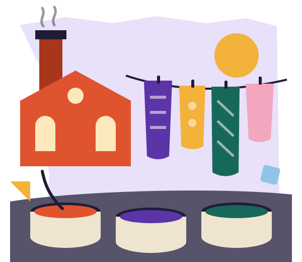

01
People before polish
You don’t need the right clothes, the right words or a portfolio. You should feel at home here exactly as you are.
Open Tuesday to Sunday
The Old Dyeworks, Market Street, UlverstonFirst time? Plan your visit
Our story
Mosaic is an independent charity run by a small staff, a big team of volunteers and the people who come through the door. We believe a creative life shouldn’t depend on talent, money or knowing the right people.

How we got here
It started with a question passed around a kitchen table: what if our town had somewhere to try things without having to be good at them first?
A handful of neighbours borrowed the keys to the old dye works, cleared the floor, found some chairs and put the kettle on. A repair afternoon became a drawing group. The drawing group became an exhibition. People kept turning up.
Our programme still grows from conversations rather than a grand plan. If you think something is missing, tell us at the welcome desk.
2013
The last dyers leave the Market Street works after ninety years. The building sits empty for three winters.
2016
A group of neighbours borrows the keys for a weekend repair café. Two hundred people turn up.
2017
The group becomes a charity, signs a lease and opens the Print Room with a second-hand press.
2020
The old drying shed is rebuilt as a hall for gigs, film and dance, with a sprung floor.
2023
A kiln, six wheels and a lot of shelving turn the back store into the Clay Studio.
2025
A lift, new toilets and a level yard make every room accessible.
What holds us together
01
You don’t need the right clothes, the right words or a portfolio. You should feel at home here exactly as you are.
02
Trying matters more than a perfect result. We make space for experiments, happy accidents and starting again.
03
A skill, a story, a spare hour or an excellent flapjack recipe. Every kind of contribution counts.
The team
Director
Ran a print studio in Cartmel for twelve years before helping clear out the dye works.
Printmaker in residence
Teaches lino on Tuesdays and runs the risograph. Has opinions about paper.
Ceramics tutor
A potter from Dalton who fires the kiln twice a week and fixes the wheels.
Textiles lead
Darner, dyer and keeper of the scrap basket. Runs Stitch and Mend.
Music programmer
Leads the Market Street Singers and books the acoustic nights.
Family programme
Invents the Saturday Makers challenges, usually the night before.
Film club
Chooses, introduces and occasionally apologises for the third Thursday film.
Visitors and access
Runs the welcome desk, the open mic and our access guide.
Volunteers
Looks after 86 volunteers and the repair café toolbox.
Class fees, tickets and room hire pay for about two thirds of what we spend. The rest comes from 640 Friends, local trusts and the pay-what-you-can tin. Every booked class keeps two supported places.
The programme is shaped by the people who use it. Tell us what you’d like to learn, offer a skill or help make someone’s first visit a good one.